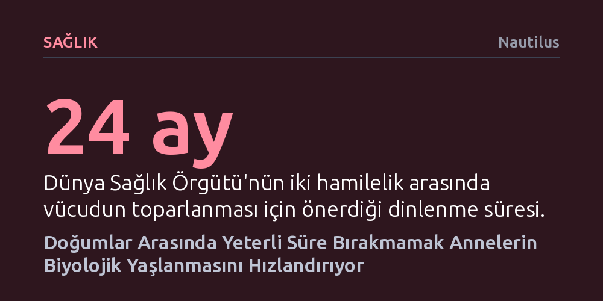

SAGLIK · Nautilus · 2026-10-24
Hamilelik kadınlarda biyolojik yaşlanmayı geçici olarak hızlandırsa da doğum sonrasında vücut toparlanma sürecine giriyor. Ancak Harvard araştırmacılarına göre doğumlar arasında en az iki yıl bırakılmadığında bu toparlanma kesintiye uğruyor ve biyolojik yaş kalıcı biçimde ilerliyor.
Doğum aralığının yalnızca sosyal bir tercih değil, annenin hücresel düzeyde toparlanmasını ve uzun vadeli sağlıklı yaşlanmasını belirleyen kritik bir biyolojik faktör olduğunu ortaya koyuyor.

Yeni bir canlının anne karnında sıfırdan gelişmesi; muazzam miktarda enerji, biyolojik kaynak ve zaman gerektiren, kadının fizyolojisini kökten sarsan bir süreçtir. Bilimsel yazında çocuk doğurmanın uzun ömre katkı sağladığına dair kimi bulgular yer alsa da, gebeliğin bizzat kendisinin biyolojik yaşlanmayı belirgin biçimde hızlandırdığı bilinmektedir. Bu durum, anne sağlığı araştırmalarında uzun süredir çözülmeyi bekleyen temel bir çelişki yaratıyordu.
Harvard Tıp Fakültesi'nden iki genetikçi, literatürdeki bu gerilimi açıklığa kavuşturmak amacıyla kadınların biyolojik yaşını takip eden mevcut araştırmaları kapsamlı bir biçimde mercek altına aldı. İnceleme sonucunda hamileliğin biyolojik saati hızlandırdığı, ancak doğum sonrasında vücudun toparlanmasıyla birlikte bu saatin yeniden yavaşladığı tespit edildi.
Araştırmacılar, kadınların biyolojik yıpranmasını tek bir biyomarkere indirgemek yerine oldukça geniş ve çok yönlü bir veri tabanını analiz etti. Akıllı giyilebilir cihazlardan elde edilen fizyolojik parametreler, rutin kan testleri, beyin görüntüleme teknikleri ve DNA üzerindeki kimyasal değişimleri takip eden epigenetik saatler bir arada değerlendirildi.
Elde edilen tüm bu farklı ölçümler ortak bir örüntüye işaret ediyor: Gebelik sürecinde hücresel düzeyde belirgin bir yaşlanma sıçraması yaşanıyor, fakat bebek dünyaya geldikten sonra anne bedeni kayda değer bir onarım evresine giriyor. Başka bir deyişle, hamileliğin yol açtığı biyolojik yaş artışı doğası gereği kalıcı olmak zorunda değil.
Araştırma ekibinin geliştirdiği modele göre sağlıklı yaşlanmanın kilit noktası, gebelikler arasında bedenin kendini bütünüyle onarmasına fırsat tanımaktır. Eğer doğum sonrası başlayan bu kritik toparlanma aralığı çok erken gerçekleşen yeni bir hamilelikle kesintiye uğrarsa, vücut eksiklerini tamamlayamıyor ve biyolojik yaşlanma kümülatif biçimde hızlanabiliyor.
Bu bulgular, iki gebelik arasında en az 24 ay bırakılmasını tavsiye eden Dünya Sağlık Örgütü yönergeleriyle de kusursuz bir uyum sergiliyor. İki yıllık bu dinlenme süreci, annenin besin depolarını tazelemesi, hormonal dengesini sağlaması ve hücresel mekanizmalarını yeniden dengelemesi için biyolojik bir zorunluluk teşkil ediyor.
Bilim insanları, ortaya konan bu çerçevenin şimdilik güçlü bir hipotez niteliğinde olduğunun ve anneler için doğrudan bağlayıcı klinik rehberler hazırlanmadan önce daha fazla araştırmaya ihtiyaç duyulduğunun altını çiziyor. Teorinin sağlamlaştırılması, birden fazla doğum yapmış kadınların sağlık durumlarının yaşam boyu düzenli olarak izlenmesini gerektiriyor.
Yine de bu çalışma, doğum aralığının yalnızca psikolojik veya sosyal bir aile planlaması tercihi olmadığını; hücrelerimizin ve biyolojik saatimizin doğrudan tabi olduğu somut bir sağlık dinamiği olduğunu net bir şekilde kanıtlıyor.